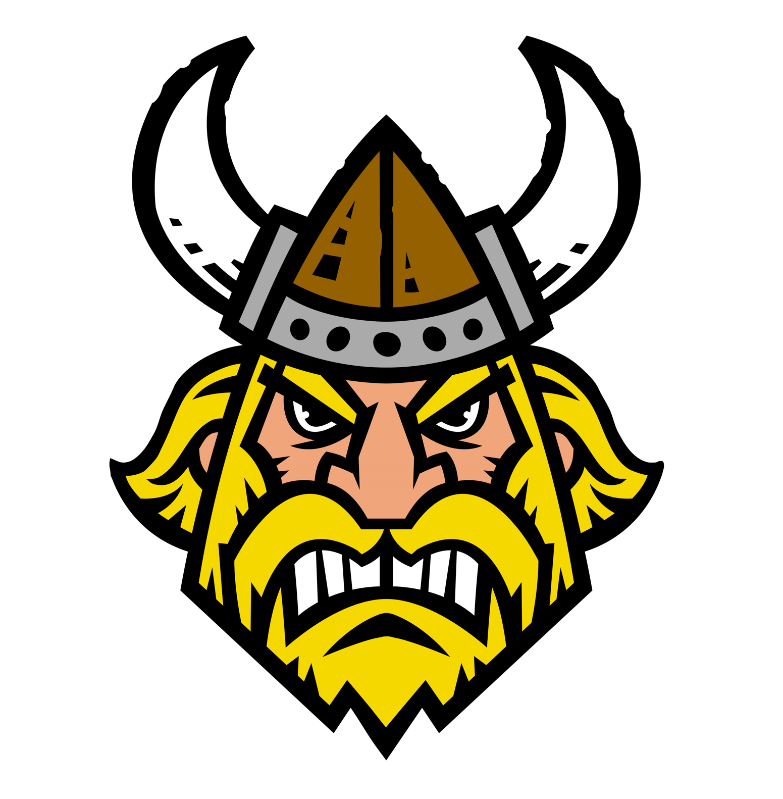

- Home
- Language
- About
VikingScript
Introduction to VikingScript
All programming languages shall be conquered!
Welcome to the ambitious world of VikingScript. VikingScript is
a Viking themed language which keeps the essence of many other
high-level programming languages like JavaScript. Years of delicate
syntax has turned us into barbaric hammer-swinging Vikings!
Language
Features
- Weakly typed
- Dynamically typed
.VKfile extension
Example Code
Below is the example code which you can see has a big viking influence!
Print to the console
Classic hello, world program
runes are the letters of an ancient Latin alphabet which
the Vikings used
| JavaScript | VikingScript |
|---|---|
|
|
Variable declaration
kalla means declare in Norse
No semi-colons
No need to specify the type of the variable
| JavaScript | VikingScript |
|---|---|
|
|
Return
hverfa identifier used, meaning "to return" in Norse
Function declaration
valhalla being the majestic heaven in Asgard where all
Vikings strive to be
No return type needed
| JavaScript | VikingScript |
|---|---|
|
|
Comments
The comment is based off a Viking helmet
| JavaScript | VikingScript |
|---|---|
|
|
Relational Operators
A barbaric syntax that even Vikings can understand
|
Conditionals
ef translates to if in Norse
kostr the Norse word for "Otherwise" replaces else
| JavaScript | VikingScript |
|---|---|
|
|
True / False
Replaced true and false values to please the Gods
| JavaScript | VikingScript | |
|
|---|
About
by Will Ruskin, Zander Zemilak and Dylan McGoldrick